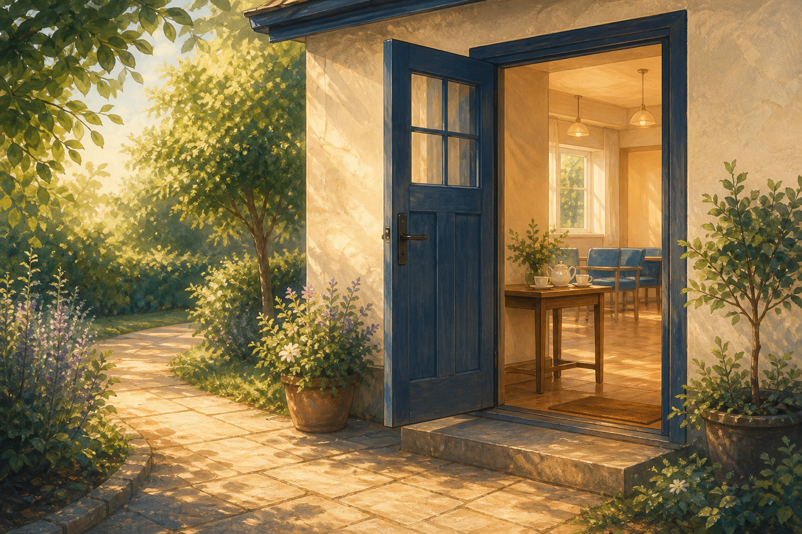

دیدار با ما
محل جلسات یکشنبه
Science Block, KE VIHandsworth School for Girls
Hall Road
Birmingham, B21 9ARباز کردن در نقشه گوگل
تماس با ما
چه برای اولین دیدار برنامهریزی میکنید، چه درباره کتابمقدس یا جلسهای پرسش دارید، بسیار خوشآمدید.
نیازی به رزرو نیست. کافی است به یکی از جلسات یکشنبه بیایید.
برنامه این هفته
دیدار با ما
جلسات یکشنبه
۱۰:۳۰ صبح
۱۲:۳۰ ظهر
هر یکشنبه میان دو جلسه پذیرایی مختصری ارائه میشود و فرصتی برای گفتوگو وجود دارد.
تماس بگیرید
پرسش درباره جلسات، کتابمقدس یا اولین دیدار همیشه خوشآمد است.
info@handsworthchristadelphians.com
برای فعالیتهای میانهفته پیش از حضور برنامه تازه را بررسی کنید، زیرا محل برگزاری ممکن است متفاوت باشد.
مشاهده برنامه تازهاولین دیدار شما
۰۱
قانونی برای پوشش وجود ندارد و لازم نیست چیزی همراه بیاورید.
۰۲
جلسات یکشنبه در ساختمان علوم مدرسه برگزار میشوند.
۰۳
کسی با خوشحالی به شما خوشامد میگوید، جلسه را توضیح میدهد و به پرسشها پاسخ میدهد.
یافتن محل جلسه
به مدرسه KE VI Handsworth School for Girls در Hall Road، Birmingham، B21 9AR بروید. پیوند Google Maps شما را به محوطه مدرسه راهنمایی میکند.
از Hall Road وارد محوطه مدرسه شوید و به دنبال Science Block بگردید یا مسیر آن را بپرسید. برای نخستین دیدار کمی زمان بیشتر برای یافتن ساختمان در نظر بگیرید.
اگر برای یافتن اتاق، دسترسی بدون پله یا نیاز دیگری کمک میخواهید، لطفاً پیش از دیدار به info@handsworthchristadelphians.com ایمیل بزنید.
پرسشهای رایج
بله، جلسات عمومی برای همه، از جمله کسانی که با کلیسا یا کتابمقدس آشنا نیستند، آزاد است.
خیر، میتوانید پیش از آغاز جلسه به سادگی وارد شوید.
خیر، میتوانید گوش دهید و فقط به اندازهای که راحت هستید مشارکت کنید.
بله، مدرسه یکشنبه ساعت ۱۲:۳۰ همزمان با ساعت کتابمقدس برگزار میشود.